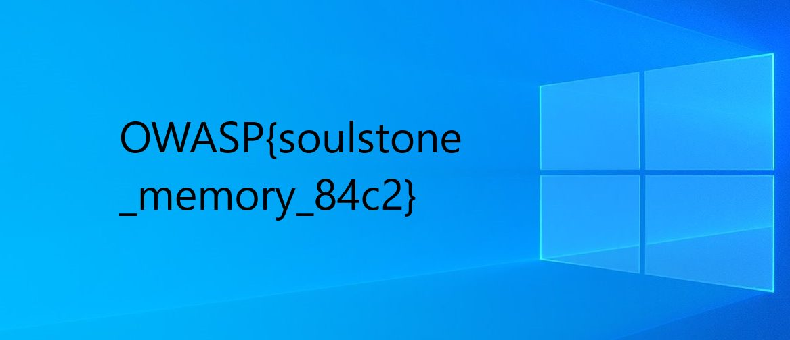

Some things are easier to remember when they are seen. Find what was left behind.
We reuse the single soul.mem image (2.6 GB Windows memory dump, captured with FTK Imager) that the whole Echoes of Vormir series is built on.
The hint ("easier to remember when they are seen") points at a picture that was open / cached on the machine rather than a text artifact - so we recover the image files that Windows kept resident in memory.
Solution
1. Enumerate cached files and carve the images
DataSectionObject / ImageSectionObject entries in the dump represent files that were memory-mapped. We list them and dump the picture-looking ones:
1vol -f soul.mem windows.filescan.FileScan | grep -iE "\.png|\.jpg"
2vol -f soul.mem windows.dumpfiles.DumpFiles --virtaddr 0xdb0f7a3a6b00 # Sacrifice.pngThis recovers (among others):
| File | What it is |
|---|---|
Sacrifice.png (1167×504) |
the "painted" image - contains the flag |
Tile.jpg |
the Windows thumbnail-cache copy of the same image (same flag) |
CachedImage_1920_955_POS4.jpg |
the default Win10 wallpaper (decoy) |
2. Look at the image
Sacrifice.png is literally a Windows desktop wallpaper with the flag painted on top of it in black text:
OWASP{soulstone_memory_84c2}
No stego needed - "the painted soul" means the answer is drawn onto the picture; you only have to pull the picture out of RAM and open it.
3. Cross-check against the raw dump
The same flag is recoverable without Volatility by string-scanning the raw image (it is also present UTF‑16LE encoded):
1strings -e l soul.mem | grep -o 'OWASP{soulstone_memory_84c2}'Flag
OWASP{soulstone_memory_84c2}Files in this folder
Sacrifice.png- the painted image carved from memory (flag visible on it)thumbcache_Tile.jpg- the thumbnail-cache duplicatechallenge-info.txt- original challenge text for the whole series